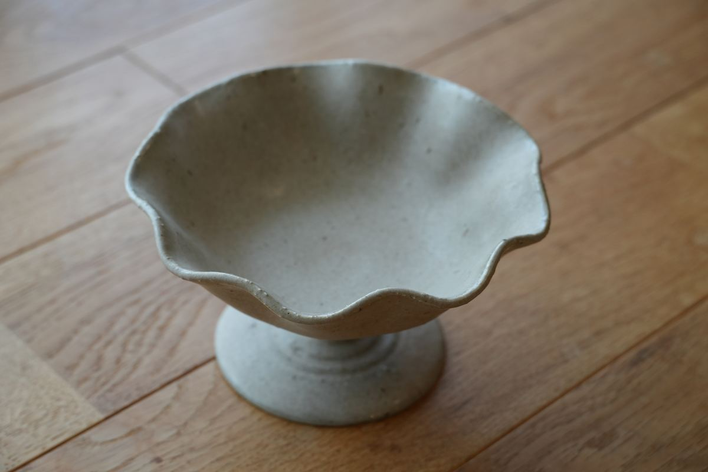
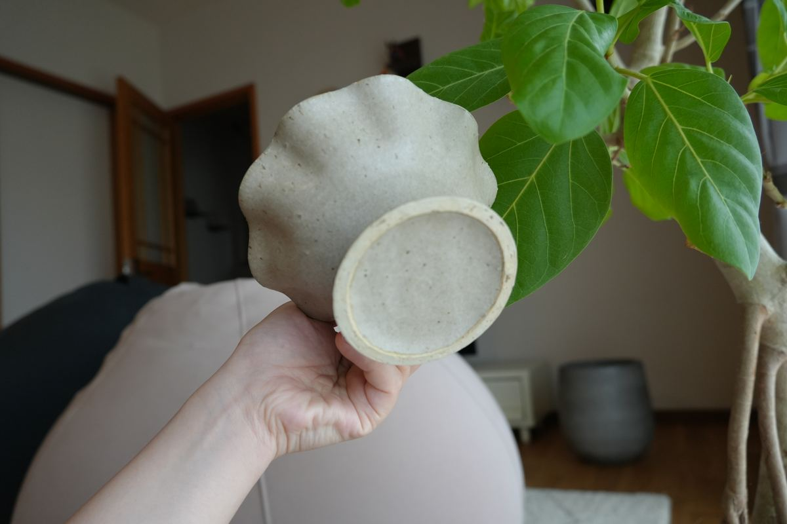

旅先での、ひとめぼれ
すのまま器店の器探しは、週末の小さな旅から始まります。塩屋のカフェで開かれていた催しで出会ったのが、この脚つきの器でした。波のようにゆれる縁、すっと伸びた脚。見た瞬間に「ここに果物を盛りたい」と思った、ひとさらです。
盛るものが、ごちそうに見える
脚があるだけで、いつもの果物がちょっと特別に見えます。ぶどうやいちご、みかんをころんと盛るのはもちろん、焼き菓子をのせてテーブルの真ん中に置いても。やさしい土の色が、どんな色の果物も受けとめてくれます。
used の器について
この器は、一度どなたかの手を経た used の器です。長く大切に使われてきた器を、次の食卓へ。一点ものなので、気になった方はお早めにどうぞ。

